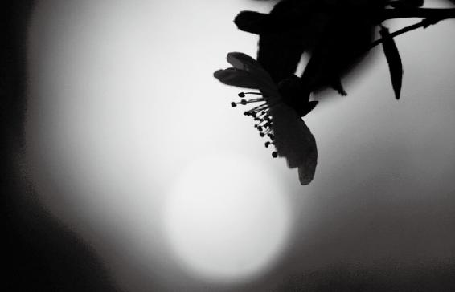
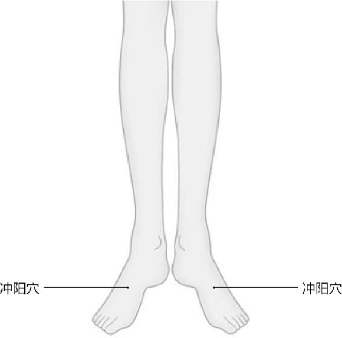
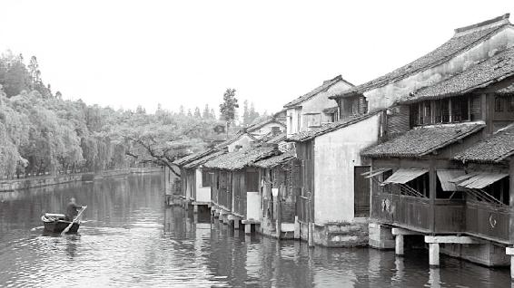

一对恋人分手了，这个女同学说，“把我的青春赔给我”。这个男同学就说，“自行车放在那里不骑，它自己还会坏得更快嘞”。所以你反而还要感谢他。
我建议大家，首先是要把气脉打通，另外就是别往油灯里面多加捻子，别去做那个“妄”。到最后，你就能体会到人生最大的快乐，是什么呢？有人说是看着自己的敌人一个个死在前头，就是“但将冷眼观螃蟹，看你横行到几时”。可是很多人是什么？“壮志未酬身先死，长使英雄泪满襟”。
经文：
帝曰：有其年已老而有子者，何也？
岐伯曰：此其天寿过度，气脉常通，而肾气有余也。此虽有子，男不过尽八八，女不过尽七七，而天地之精气皆竭矣。
帝曰：夫道者，年皆百数，能有子乎？岐伯曰：夫道者，能却老而全形，身年虽寿，能生子也。
“帝曰：有其年已老而有子者：何也？岐伯曰：此其天寿过度”
梁冬：“帝曰：有其年已老而有子者，何也？”黄帝问他的老师岐伯，有些人虽然很老了，却仍然有生育能力，这是为什么？
徐文兵：这是黄帝的第二个问题，他第一个问题是问“人年老而无子者，材力尽邪？将天数然也？”然后就引出了老师岐伯的两段评述。
第一段讲的是女子，说女子从7〜49岁有一个变化过程。到49岁以后基本上就绝经，没有排卵也不会怀孕了。第二段讲男子，男子到64岁连走路都踉踉跄跄了，“天癸竭”，也不能生育了。
听完老师的解答以后，黄帝进一步提出了这样一个问题：为什么有的女人过了49岁，男人过了64岁，依然还有生育能力呢？
为什么有的女人过了49岁，男人过了64岁，依然还有生育能力呢？
举个例子，我国有位著名的影星在将近60岁的时候，结婚生了儿子。到60岁还能生孩子的人确实不多，很多人到了“七八”56岁的时候就出现了心功能衰弱的情况。我的一些学生用现代的商品名称简单概括了一下男人的生理周期，说男人8〜16岁时血气方刚，是“奔腾”；16〜24岁是“日立”，就是每天早晨就无欲而起。
男人8〜16岁是“奔腾”；16〜24岁是“日立”；32岁叫“奔驰”；40岁称作“微软”；到48岁，就有点“松下”；56岁以后就是“联想”，只能动动念头。
梁冬：就是能见到“陈伯伯”（“晨勃勃”）。
徐文兵：男人32岁时是高峰，原来叫“奔腾”现在叫“奔驰”，永不停息；但是过了32岁以后，到40岁就出现什么问题呢？这时称作“微软”，觉得有点力不从心了。48岁，发鬓斑白以后，就有点“松下”；56岁以后就什么都不能干了，就是“联想”，只能动动念头。
梁冬：不是“联想”，是连想都不要想。
徐文兵：懂得养生之道的人，不会按照这种自然规律，像大多数人一样去走，他除了性能力保持比较长的时间以外，寿命、活跃程度也会比一般人长。
梁冬：这是为什么呢？
徐文兵：岐伯回答了，“此其天寿过度”，是吧？
梁冬：什么叫“天寿过度”？
徐文兵：每个人都被赋予了两个甲子的寿命，如果能活这么久，就叫尽其天年。但是世间的人却有另外两种情况：有的人生下来就夭折了，说明他的天寿不足；有的人由老天赋予的信息和能量超过了常人，因而他的寿命会比两个甲子还要长，也就是说他天赋的素质本来就比一般人要好一些。
有的人生下来就夭折了，说明他的天寿不足；有的人由老天赋予的信息和能量超过了常人，因而他的寿命会比两个甲子还要长。
梁冬：这个还是有道理的，比如苹果，有些苹果天生就比另一些苹果长得大一点，也不能说不公平。有的人说天生就公平，有的人说天生不公平，我觉得这两句话都是对的。
有的人说天生就公平，有的人说天生不公平，这两句话都是对的。
徐文兵：这种先天禀赋的差异，大家一定要认识到它的存在。
梁冬：孔子好像说过，有多大的头，就戴多大的帽子，否则就不吉祥，对不对？
徐文兵：这就是人们经常说的人贵有自知之明。
梁冬：那这个自知之明，这个天寿，主要是跟父母有关喽？
徐文兵：跟父母有关，也跟受孕的时间有关。
徐文兵：现在算命都是根据人出生的时辰来算，这样做其实是不准确的。
梁冬：在这里我们旗帜鲜明地反对封建迷信。
徐文兵：强烈反对。有些人算命说是根据出生的时间去算，这其实就是一个模糊的算法。为什么？既然你是算命，就应该算天命，而不是算人为的命，因为人为的东西可以改变你的出生时间。所以很多人为生个什么世纪婴儿、奥运宝宝，就提前剖腹产，我想说，这是人为给他的命运，不是他的天命。真正的算命应该算天赋对人的影响，这些影响因素包括父母的遗传，以及受孕时间。
真正的算命应该算天赋对人的影响，这些影响因素包括父母的遗传，以及受孕时间。
梁冬：是要精确到秒吗？
徐文兵：应该是精确到那个时辰，两个小时之内。所以说，受孕的那一刹那对人是有很大影响的。
受孕的那一刹那对人是有很大影响的。
梁冬：因为那个时候有所谓的天地之间的一种影响。
徐文兵：马克思说“人是社会关系的总和”，这种社会关系包括父母的关系，还有什么？天时地利的关系。受孕那天是个什么节气、什么时辰、在什么地方，是中原、西方、东方，还是南方，等等，和这些都有关系。
梁冬：可不可以这样去揣度一下，就是说因为在不同的时间，对地球和其他星球之间的磁场角度和其他方面都会产生影响，所以说它其实是一个综合力的影响。
徐文兵：对，它很复杂，人的智力水平无法揣测，所以有的人就认为没有关系。古代人的“慧”很高，能用自己的心神去体会，所以古代特别注重研究星宿对人的影响。古人讲二十八星宿，东方青龙、西方白虎、南方朱雀、北方玄武等，就是观察到了太阳和月亮的变化对人的影响。

日月节气的变化对人都会产生影响。
梁冬：对地球的影响，对地球上人的影响。
徐文兵：对我们生活的影响，比如，我们的阳历就是根据太阳的变化制定的，它有二十四节气；阴历是根据月亮的变化制定的，有初一和十五。中国人还算什么？算五运六气，算一甲子，这就牵涉到了更深邃的星象变化对人的影响。
中国人还算五运六气，算一甲子，这就牵涉到了更深邃的星象变化对人的影响。
梁冬：有一段时间，我跟在西方的一些中医和物理学家聊天，他们说，既然在英国出现了牛顿这样的人，那就说明他们那个地方的人是能够理解不同星球之间的万有引力与物种之间的关系的。
他们从这个角度去重新理解中医，认为也许我们现在还无法用量度的方式来揣测，到底这种磁场夹角或者互相引力对地球生物的影响有多少，但是他们相信中国的五运六气，也就是地球的公转和自转确实会对生命造成影响。
梁冬：我们之前说过“天寿过度”，就是天给他的寿命长于常人，这个“过度”其实是一个褒义词。
徐文兵：我们讲的女性七年、男性八年为一个生理周期，指的是大多数人，即平均水平。而“天寿过度”的人则超乎于平均水平之上。
梁冬：对，岐伯这种人“天寿过度，气脉常通，而肾气有余也”。
徐文兵：“天寿过度”是遗传的基因，这是一个物质基础。在这个物质基础上，它还有能量的原因。比如，我给你一辆车，这是物质基础，但是你怎么使用、维护、保养这辆车，就涉及到“气”的问题了，所以它说“气脉常通”。很多人说我有一部车且特别珍惜，放在车库里，不开、不用，这样就能一直保存它。事实证明什么？
梁冬：事实证明坏得更糟糕！
徐文兵：没错。所以中医说人的身体有一个现象—用进废退，就是说你用它能促进它更好地发育，不用就退化了。
很多人说我有一部车且特别珍惜，放在车库里，不开、不用，这样就能一直保存它。事实证明坏得更糟糕！中医说人的身体有一个现象—用进废退，就是说你用它能促进它更好地发育，不用就退化了。
梁冬：这让我想起一件事情，一对恋人分手了，女同学说：“把我的青春赔给我。”男同学就说：“自行车放在那里不骑，它自己还会坏得更快嘞。”所以对女同学来说，你反而还要感谢他呢。道理就在这里，对不对？
徐文兵：对，这男同学说得还比较客气，他应该说我们互相滋养，谈不上损失，如果你有损失，那我也有损失。
梁冬：你有获得，我也有获得，是吧？
徐文兵：这件事情怎么讲，第一，不用就会导致“用进废退”，它很多功能退化了。很多人说，我这也不想，那也不干，这也不做，那也不为，是不是我就能长寿？不见得。所谓“气脉常通”，就是说你要用它。第二，走向另一个极端也不对，不要用过头了，把自己消耗掉了。本来我们只有一盏油灯，一个捻子照着就够了，您非添俩捻让它烧得过快，这样也不对。
本来我们只有一盏油灯，一个捻子照着就够了，您非添俩捻让它烧得过快，这样也不对。
所以跟中医说话，你没法走极端。如果你习惯了简单、粗暴、一根筋的思维，让我告诉你到底吃什么好？到底该干什么不干什么？为什么“道可道，非常道”？“我”是谁？在什么情况下、在什么条件下该怎么做？那我没法回答你，因为我说不出来一个固定不变的东西或真理。
“气脉常通”
徐文兵：我们经常说“经脉”，经络走的是气；脉，主要是讲血脉，它走的是有形的物质—血。所以气脉常通，其实就是讲经脉常通，意思就是：我们的血管，包括我们的动脉、静脉，还有毛细血管，它们都是通的，也就是血通。
血通会出现什么现象呢？没有瘀血。别以为中医说哪儿有块死肉，发青发紫了才叫瘀血。局部的血液循环不好，会出现什么？温度不够。比如测体温，西医测量时，腋下、口腔、肛门分别是一个温度。而中医检查身体则讲究三部九侯。
局部的血液循环不好，会出现什么？温度不够。
梁冬：就是那三个地方吗？
徐文兵：不，要比它复杂得多，我们现在流行的诊脉叫什么—独取寸口。大家看中医时习惯一伸胳膊，医生就伸出仨指头往病人脉上一搭，这个脉只是我们古代三部九侯的一个部分—寸口脉。寸口脉是从谁那儿流传下来的呢？以前人们看病都要摸全身，扁鹊则独取寸口。
现在流行的诊脉叫什么—独取寸口。
梁冬：还摸哪里啊？
徐文兵：十二经都有动脉，三部九侯就是上中下三部。比如上部我们要摸颈动脉、耳前的动脉等；下部的脚上有一条足背动脉叫跗阳脉，那有一个穴叫冲阳。他号这些不同的脉，同时也摸它局部的温度，如果发现这块的温度低于常温，摸上去不热乎或者冰凉，说明什么？
如果发现这块儿的温度低于常温，摸上去不热乎或者冰凉，说明什么？气血不通。

跗阳脉是脚上的足背动脉，冲阳穴是跗阳脉的“经纪人”。脚上出了问题，“问问”冲阳穴就知道了。
梁冬：气血不通。
徐文兵：这里就是被身体遗忘的角落。有人就问，你说我到底是气不通，还是血不通？大家可以观察一下，你跟人握手，有的人手不热乎或者冰凉，但那个手还是正常的，没有腐烂、溃疡，说明什么呢？说明血通，但是气过不去。这个叫血通气不通。
你跟人握手，有的人手不热乎或者冰凉，但那个手还是正常的，没有腐烂、溃疡，说明什么呢？
还有的人不仅手是凉的，甚至连皮色都变了，手指头发紫发暗。这样的人会从手指尖或者脚趾尖开始坏死，西医称之为血栓闭塞型脉管炎。怎么办？一点一点截肢，先剁手指头，再往上剁手掌，一点一点往上砍。
梁冬：为什么要剁呢？
徐文兵：因为局部坏死就会感染，感染以后会出现脓毒血症，会要人的命。
梁冬：糖尿病就会有这样的情况？
徐文兵：糖尿病性的坏疽比这还严重，叫血不通了。原来是气不通，现在是血不通。气血都不通了，就只能死掉了。身体的局部是这样，我们能看到的手是这样，那么内脏呢？
梁冬：也有可能是这样。
徐文兵：内脏因为气或者是血过不去，也会先凉，再变色，然后坏死。所以很多人说我前段时间突然得了一场什么病，我说没有突然，没有偶然只有必然，就是说是你没有注意到你那里出了问题。
很多人说我以前突然得了一场什么病，其实没有突然，没有偶然只有必然，就是说是你没有注意到你那里出了问题。
所以当我们给病人做检查的时候，比如说做三部九侯的检查，就要摸他的背、肚子，找到那些阴寒凝滞、气脉不通的地方。接着怎么办呢？给他扎针，以针引气；或者做艾灸，把他局部的那些能量唤醒。这样的话，能打通气脉，病者就可以开始治病了；没有病，可以保健，提高性生活质量，延长寿命。
梁冬：经常泡热水澡，是不是好事？
徐文兵：不见得。
梁冬：为什么呢？
徐文兵：热水的热度有个渗透力的问题。晒太阳、烤火、艾灸、烤频谱仪、睡电褥子都能获得热量，但是你比较一下，它们感觉都不一样。因为每一种热都有它的波长、频率、振幅，只有和人体的气，或者说和人体的热、能量最接近，才能引起和谐共振，能深入透达到身体里面。否则，就算表皮烫伤了，甚至起泡了、烤熟了，那个热也进不去。
每一种热都有它的波长、频率、振幅，只有和人体的气，或者说和人体的热、能量最接近，才能引起和谐共振，能深入透达到身体里面。
梁冬：热水就有这个问题吗？
徐文兵：热水能达到的热度深度就不够。
梁冬：现在很流行做艾灸，为什么我们要选择那个艾？
徐文兵：燧人氏钻木取火，两个木头磨得发热了，但是木头没着，谁着了？艾绒，因为它是易燃的。艾绒的还有一个特点就是保温，它能保持火苗长久。我们经常说死灰复燃，艾绒就是这样的，看着好像没火星了，一吹“哗”一下那个火又起来了。
人们发现用艾绒的这个热，去给自己做烤或者灸的治疗的时候，感觉舒服，像冬日的暖阳，像母爱。
艾绒的这两个特点，使它成为了古代人们的生活必需品。后来人们发现用艾绒的这个热，去给自己做烤或者灸的治疗的时候，感觉舒服，像冬日的暖阳，像母爱。中国人造字和发音都有一些关系，所以“我爱你”的那个“爱”，和艾叶的这个“艾”，发音是一样的。
艾灸有如冬日暖阳，它的热度跟热水的热度是不一样的。
梁冬：您说艾灸有如冬日暖阳，它的热度跟热水的热度是不一样的。那我还有一个问题，我有一个朋友的肠胃比较凉，正好我家里有一个暖气片，就给了他一个垫子，让他把肚子贴在那个暖气片上，后来烤一烤又转过来。这样做行吗？
徐文兵：比不加温或者用其他的方法要好一点儿。取暖用品，除了这种水暖，还有电暖气、电子取暖器等，但相比之下还是水暖舒服，加温后的水散发出来的热量的振幅、波长等，跟我们人体相对更接近一些。而最接近的，还是艾草，而且它放的时间越长，渗透性越好，烟也越小。
热量的振幅、波长跟我们人体最接近的是艾草，而且它放的时间越长，渗透性越好，烟也越小。
所以古人说“七年之疾，欲求三年之艾”，就是说三年以上的陈艾，在点着以后做艾灸效果非常好。这是中医帮助一些寒性特别是虚寒性的病人保持“气脉常通”的一个有效治疗方法。很多人说我去扎针灸，我说您是去扎针去了，不是扎灸去了。灸是指什么？艾灸。
三年以上的陈艾，在点着以后做艾灸效果非常好。
梁冬：您真的解决了我一大困惑，以前我一直都不明白为什么都是热，大家却偏偏要用艾灸。还有一个问题，徐老师，有时候家里没艾草，有一根从古巴带回来的雪茄，拿来点点行不行？
艾灸是中医帮助一些寒性特别是虚寒性的病人保持“气脉常通”的一个有效治疗方法。
徐文兵：这个真不行。你看我们吃的烤鸭，你可以用电烤、用炭烤，为什么还要专门用果木烤呀？美食家就知道，果木烧着以后，它发出的那种光、热，以及散发出来的气味，就跟其他的燃料不一样。
“肾气有余”
梁冬：接下来讲“肾气有余”，是不是说气脉常通之后，肾气就有余了？
徐文兵：对。这个“肾气有余”是这样的，不是说老天爷给的恩惠多，会多给你一勺肾精，然后化成的肾气就多。我在将近二十年的临床治疗中发现，肾气是真的能挣的不如会花的，它绝对是省下来的。当一个人气脉不通的时候，肾气燃烧成的那个火，或者说肾阳，去温暖你全身的话，就“费电”或者“费气”，是吧？就好像烧锅炉的，我这里锅炉烧得都快炸了，你们家暖气还没热，或者屋里温度还达不到16℃，咋回事啊？
肾气是真的能挣的不如会花的，它绝对是省下来的。
梁冬：不通。
徐文兵：暖气管道堵住了，这就费劲，烧着气、费着油，你还不暖和，双方都痛苦。所以气脉常通的人省什么呀？省气！
气脉常通的人省什么呀？省气！
梁冬：这个很有意思啊。
徐文兵：我们之前讲过，有的人活到最后，行步不正了，记忆力也减退了，以前的事忘不了，现在的事儿记不住。
有的人因为一年省点“气”，两年省点“气”，到大家都这样的时候，自己的肾气还有余，还能支撑着去做很多事情。
梁冬：这不是老年痴呆症前兆嘛。
徐文兵：白天打瞌睡晚上睡不着。可有的人因为一年省点“气”，两年省点“气”，到大家都这样的时候，自己的肾气还有余，还能支撑着去做很多事情。
所以我建议大家，首先是要把气脉打通，另外就是别往油灯里面多加捻子，别去做那个“妄”。到最后，你就能体会到人生最大的快乐，是什么呢？有人说是看着自己的敌人一个个死在前头，就是“但将冷眼观螃蟹，看你横行到几时”。可是很多人是什么？“壮志未酬身先死，长使英雄泪满襟”。
梁冬：要“行至水穷处，坐看云起时”，就得像您刚才讲的，血脉常通，这样才会肾气有余。
徐文兵：关于肾气有余，我们山西老家有这么一个民谣，它说“男人是个耙耙，女人是个匣匣”。“男人是个耙耙”，意思就是从地里往回搂粮食的那个。
男人是个耙耙，女人是个匣匣。不怕耙耙没齿子，就怕匣匣没底子。
梁冬：什么叫匣匣？
徐文兵：放钱、存钱那个匣子，有点什么东西都存进去。这句话后面还跟着一句话，很有意思，它说，“不怕耙耙没齿子”，就是我那个钉耙（像猪八戒扛的那个钉耙），里边儿那个齿子缺几块，因而就搂不着东西，不怕这个，也不怕咱这个耙子小或者没齿子，就怕什么？“就怕匣匣没底子”。
许多有钱人之所以有钱，并不是因为他光会挣钱，而是在于他会省钱。所以现在很多做营销的人老说要向高端客户卖奢侈品，其实是错的。
梁冬：深刻啊。
徐文兵：匣匣没底子，漏了。我们一直讲，很多人在漏精，是吧？
梁冬：这说明一个问题，许多有钱人之所以有钱，并不是因为他光会挣钱，而是在于他会省钱。所以现在很多做营销的人老说要向高端客户卖奢侈品，其实是错的。
徐文兵：能挣不如会花。
梁冬：大部分有钱人其实比一般人更加抠门。
大部分有钱人其实比一般人更加抠门。
徐文兵：我们要把精气用在刀刃上，这样就既省精又省气，干的事还相当漂亮。
“此虽有子，男不过尽八八，女不过尽七七，而天地之精气皆竭矣。帝曰：夫道者，年皆百岁，能有子乎？”
徐文兵：男女到了七七和八八的岁数，生育功能基本上就退化了，这是天赋。但不管天赋怎么样，不管生理变化规律是什么样，只要能做到顺应自然变化规律，然后在饮食起居修身养性上多下功夫，结果会怎么样呢？
梁冬：“夫道者年皆百数，能有子乎”？
徐文兵：这就是黄帝问的。
梁冬：“岐伯曰：夫道者能却老而全形，身年虽寿，能生子也。”普通人到了七七和八八不能生子了，但是“道者”却能生子，请问什么叫“道者”？
普通人到了七七和八八不能生子了，但是“道者”却能行。
徐文兵：我们以前讲了个“德”，德全而不危也，什么叫德呢？就是按照那个道—自然变化规律做事。如果你做的事，基本上都符合天地变化，我们叫“德全”。我们讲“修行”，讲这个人是“高僧大德”，是什么意思？就是一个僧人修行得非常好，他的所思所想所作所为都是符合天道变化的，这就叫“德”。
如果你做的事，基本上都符合天地变化，我们叫“德全”。
梁冬：插一句话，徐老师，这个德不仅仅是要有高尚品格，还得有智慧才行。
徐文兵：对，必须得有“慧”，否则你就体会不到天道的变化，也谈不上跟它走。除了你要“知道”，老师还教你，得“觉道”，即能感觉得到。节气一变化，尽管温度还很低，你却能觉到“吹面不寒杨柳风”，也就是春天来了，你能感觉到它。最终还要“悟道”。所以有知、有觉、有悟，这才能体会到“道”。
有知、有觉、有悟，这才能体会到“道”。
梁冬：最后才能“行道”。
徐文兵：悟道、正道，再去行道，以后再给别人讲，即布道，就是这么个过程。
我们接着刚才没说完的“德”，“德”是双人旁，它还是讲人。但是“道”是什么？天道，它没有双人旁，已经不讲人了，讲的是达到与天地的变化完全一致的那种状态，能达到这种状态的叫“道家”，或者说“道者”，他们由此创立道教。因而我们说比有德的人还要高的叫什么？天人合一。不知道你骑没骑过马？
梁冬：骑过。
徐文兵：我有一次被朋友拉到一个跑马场，里面都是那种经过训练的马。人家给我戴上所有的装备行头，戴上头盔，然后有人还牵着马，我就围着那个圈跑。人家说先让马慢慢走，然后快步走，还告诉我，马起你也起，马落你也落，所谓“人马合一”。这样的话，马与人都不累。但是我老掌握不了那个节奏，往往是马往上拱我往下砸，马往下落我往上颠，最后闹得自己腰酸背疼。
人马合一，马与人都不累。

『道』的根本是真正的让自己的身心和天地变成如鱼得水、和谐共振的状态。
梁冬：关键是马也腰酸背疼，你知道的。
徐文兵：这匹马心里肯定也很痛苦：怎么拉了这么个人。我知道马为什么尥蹶子了，因为我太讨厌了。我没骑之前还想终于逮着机会骑马，一定要多骑，骑它俩小时，还不用自己掏钱；结果骑了十几分钟就受不了，趔趄着腿就下去了，第二天走步还撇八字腿。我还属马，却连人马合一都做不到，更不用说与天地合一了。
梁冬：知道的人说您去骑马了，不知道的还以为您干嘛呢！
徐文兵：这个大腿内侧肌肉疼得，哎哟！
梁冬：总而言之，就是如果不能做到人马合一，双方都累。
徐文兵：都痛苦。同样，你如果不能做到天人合一，就完成不了你的天寿，也尽不了天年，而且在 生命的过程中，还可能会罹患很多疾病，甚至活得生不如死。
你如果不能做到天人合一，就完成不了你的天寿，也尽不了天年，而且在生命的过程中，可能会罹患很多疾病，甚至活得生不如死。
梁冬：我觉得您刚才讲的骑马的事情，让我感觉有一个东西很重要—节奏，就是说，整个的“key point”即核心点在于如何把握一个节奏。
徐文兵：春生夏长秋收冬藏都有一个节奏，白天昼夜也有节奏。生命同样也有节奏。
梁冬：我碰见过一些炒股炒得很厉害的人，他们讲到炒股最重要的东西就是——你有没有踏上那个节奏。
徐文兵：跟上人家那个步点。
梁冬：对，就是股市的起跌。
徐文兵：你跟女同学跳舞的时候，老踩人家脚，那也是因为点儿都没踏对，节奏没跟上，一步落步步落。所以黄帝说的这个“道者”，绝对是能与天地同步且完全跟上了时代节奏的，并且不是社会的节奏，而是大自然的节奏。
黄帝说的这个“道者”，绝对是能与天地同步且完全跟上了时代节奏的，并且不是社会的节奏，而是大自然的节奏。
徐文兵：我再跟大家强调一点，就是千万记住道家和道教不是一回事。
梁冬：到底有什么不同呢？
徐文兵：道教的历史不过两千年，它的前身是汉朝时候的张道陵在四川创立的五斗米教。所以姓张的那个人，就被称为“天师”。
梁冬：张天师嘛！
徐文兵：对。道教与其他宗教一样，它有传承。《水浒传》里写到，宋朝闹瘟疫，第一件事就是去请这个张天师去布道、做法、驱邪、辟邪等。道教的历史虽然不过两千年，但是道家的历史溯源却很早，伏羲、女娲、神农、黄帝等都是道家的传承。现在很多人一说起道家，就想到老子，其实在老子之前，已经有很多先贤。周朝的军师，就是帮助周武王、周文王打天下的是谁？
现在很多人一说起道家，就想到老子，其实在老子之前，已经有很多先贤。
梁冬：《封神演义》里讲到了，姜子牙。
徐文兵：对，姜尚，他是道家。周朝之前是商朝，商朝的开国宰相伊尹，他也是道家。
梁冬：伊尹，不是个厨子吗？
徐文兵：伊尹不仅是个厨子，他以做厨子“和鼎调羹”“调和五味”的理论来治理天下，正所谓“治大国若烹小鲜”。伊尹给汤王（商汤）做了一顿饭，汤王问他：“你怎么做得这样好？”他就说：“我只不过是把五味给调和好了，因而这饭就好吃了，治理天下莫过于此。”他后来被汤王聘为军师、谋士、宰相，治理天下。
伊尹除了是开国宰相，他还对道家和中医有伟大的贡献。我们现在用的方子叫“经方”，它就来自于伊尹写的《汤液经法》。
我们现在用的方子叫“经方”，它就来自于伊尹写的《汤液经法》。
梁冬：那伊尹比老子老很多喽？
徐文兵：老得多。老子并不是道家的创始人，在他之前有姜尚、伊尹，再往前有黄帝，黄帝之前有神农，神农之前有伏羲、女娲，这是道家一脉的传承。
老子并不是道家的创始人，在他之前有姜尚、伊尹，再往前有我们讲的黄帝，黄帝之前有神农，神农之前有伏羲、女娲，这是道家一脉的传承。
梁冬：你说起来一两个字的距离，其实中间隔了几百年。
徐文兵：几千年。我们讲黄帝纪元，就是说现在距离黄帝诞生时期有多少年。大家都知道我们现在用的是“公元纪年”，这是辛亥革命以后开始采用的西方纪年法。大家看看中国的历史，很多都发生在公元前，对不对？
公元纪年法只是在用西方的标准衡量我们，其实老百姓一直用的是谁的纪年？黄帝纪年！
耶稣出生的那个公元一年或者是公元零年，我们正处于汉朝，汉朝之前有前秦，有秦朝，秦朝之前有春秋、战国，再往前有夏、商。所以公元纪年法只是在用西方的标准衡量我们，其实老百姓一直用的是谁的纪年？黄帝纪年！请问今年是黄帝纪年第几年？
梁冬：有没有四五千年呢？
徐文兵：有！你说的很准，就是四五千年，大家可能不知道我们现在是距黄帝多少年，但是应该知道，我们一直在用这种甲子纪年法，对不对？今年什么年？
梁冬：己丑吧？
徐文兵：对，去年呢？
梁冬：戊子年。
徐文兵：对。甲子这种纪年方法，六十年一轮回，就是从黄帝开始的。所以从黄帝纪年开始，我们已经度过了七十八个甲子，再加上到现在的二十五年，今年就是第四千七百多年。
梁冬：这很有意思，我觉得您提了一个重要的概念，就是很多人都认为公元零年已经很远很远了，实际上，在那之前还有很长的一段历史！
徐文兵：我们最灿烂的文明，都是在公元前发生的。
我们最灿烂的文明，都是在公元前发生的。
梁冬：子孙不肖啊！
徐文兵：道家和道教是有区别的，中国人的信仰是从道家那里传下来的。很多人说道家不入世，但你看我讲的几个开国的人，都是道家。再往后走，刘邦的开国谋士宰相张良，他是师承黄石公的，也是道家。所以在汉朝秉承的是什么？修身。
很多人说道家不入世，但你看我讲的几个开国的人，都是道家。再往后走，刘邦的开国谋士宰相张良，他是师承黄石公的，也是道家。
梁冬：黄老之术。
徐文兵：对，修身养息、无为而治，结果才有了“文景之治”，为将来汉武帝打匈奴、稳定边疆积累了大量的财富。你再往后看，诸葛亮、明朝国师刘伯温等都是道家。
梁冬：所以道家才是中国古代帝王术的真正根源。
徐文兵：说它是帝王术也好，贫民术也罢，总之它是一种信仰和行为准则的根源。
梁冬：如果不懂道家的话，真的很难说自己是一个中国人。
徐文兵：道者，不是信道教的人，而是真正的让自己的身心和天地变成如鱼得水、和谐共振的状态的人。我希望大家都能先知“道”，然后行“道”、正“道”、悟“道”、觉“道”，最后变成得“道”的人！
道者，不是信道教的人，而是真正的让自己的身心和天地变成如鱼得水、和谐共振的状态的人。
“夫道者，能却老而全形”
梁冬：徐老师，接下来我们讲“岐伯曰：夫道者，能却老而全形”。什么叫“能却老而全形”啊？
徐文兵：“却”是推却的意思。我们说把老的时间推迟了，就叫“却老”。很多人说“纯德全道”，或者是“德全不危”，我都做不到，那最起码您能做到全形吧？
梁冬：什么叫“全形”啊？
什么叫“全形”啊？就是我们的肉身是完整的。
徐文兵：就是我们的肉身是完整的。你看不到气，看不到神，因而也理解不了，但你能看到自己的肉体，就是佛家所说的“臭皮囊”。“身体发肤，受之父母”，你起码要做到不损害它、不伤害它。古人说到死留个全尸，这是我们的一个价值观！
梁冬：在古代，从理论上来说，你剪个头发都应该有讲究。
徐文兵：剪个头发也要找时间，正月是不剪头发的，对不对？
梁冬：正月里剪头发会怎么样？
徐文兵：嘿嘿，没怎么样！捎带说一句，为什么一般人在正月里不剪头发呢？我们还有句俗话叫“有钱没钱，剃头过年”，不管有钱没钱，一般人都赶上腊月里年根上，以崭新的面貌迎接新的一年。由此可见，“全形”很重要。
“全形”很重要。
梁冬：怎么个重要法？
徐文兵：经过几亿万年的进化，我们存在的这个形是最终保留下来的，都是有用的。
梁冬：有一个问题我想问一下徐老师，就是男人的乳头有什么用？
男人的乳头有什么用？
徐文兵：也有几位朋友曾问过我同性恋的问题，我一块儿说一下。同性恋表现出来的是行为状态，乳头表现出来的是肉质状态，其实就是说在特殊情况下，男女是可以变性的。
梁冬：您是这样解释这个事情的？
徐文兵：对，就是说世界留下这种物质的存在，是为将来在某种特殊情况下，为它产生变化所准备的一种物质基础。
存在即合理。万物都有其存在的原因。
为什么会有同性恋的问题？为什么会有异装还有变性的行为？为什么有的男人不想做男人，有的女人不想做女人？这其实都是进化过程中的一种状态。比如我们曾看到当某种物种的鱼都灭绝了以后，从这群雌性或者雄性的物种里面，又变出来一条异种鱼来，这就是自然的变化！
为什么会有同性恋的问题？为什么会有异装还有变性的行为？为什么有的男人不想做男人，有的女人不想做女人？
梁冬：所以这个世界不用担心没有男人，对不对？
徐文兵：不用担心，有些东西存在其实是正常的。有人问我怎么看同性恋问题，我说《黄帝内经》说了“各从其欲，皆得所愿”，你干嘛要强迫人家，干嘛非逼人家去结婚，然后害那个人，是吧？
“身年虽寿，能生子也”
徐文兵：说到“全形”，我在此劝大家不要轻易割阑尾。有人可能觉得阑尾没用，我给大家讲一下阑尾的作用。人类的祖先吃什么？茹毛饮血。
梁冬：现在吃日本料理不也一样嘛。
徐文兵：阑尾这个器官是专门消化动物的毛发的，就是说我们把那个生肉连皮带肉、连毛带血吃进去以后，动物的那个毛发是通过阑尾消化的。进化到现在，我们吃肉之前会剃毛、刮毛，把它弄得干干净净，慢慢地这个阑尾的功能也退化了。但是它的功能并没有完全消失，所以不要轻易切除它，要保持“全形”。
阑尾这个器官是专门消化动物的毛发的，就是说我们把那个生肉连皮带肉、连毛带血吃进去以后，动物的那个毛发是通过阑尾消化的。
还有一个扁桃体的问题，我说过孩子是纯阳之体，不要给他吃烤鸡翅、鸡肉等热性的东西，否则吃完后就容易上火，导致扁桃体发炎。有人认为，防止扁桃体发炎的最省事办法就是切掉它。我告诉你，咽喉是心的门户，扁桃体切除以后，心的门户大开，就会直接伤害到内心。
咽喉是心的门户，扁桃体切除以后，心的门户大开，就会直接伤害到内心。
所以把自己身体的某些部分切掉以后，你就不能全形了，这会影响你的生命质量。这就是“不全”，我们叫“缺”。
如果你的身体本来有这个东西，你没切它，但是把它弄得扭曲变形了，这就叫“残”，摧残。
另外，如果你的身体本来有这个东西，你没切它，但是把它弄得扭曲变形了，这就叫“残”，摧残。比如说古代妇女缠足，好好的一双脚给拧成那个样子，她虽然还有脚，但是已经“不全”了，变成了“残”。还有现代人的抽脂行为也同样如此。
梁冬：我太胖了，然后就抽脂肪，或者觉得我这儿不胖，不够丰满，去垫硅胶等行为都是在摧残你的身体。这些人需要调整的其实是心态。很多人觉得自己不美、不漂亮，或者自我厌恶，这都是有违“全形”的观念的。如果你不能做到修德修道的话，至少要做到什么呢？全形！
很多人觉得自己不美、不漂亮，或者自我厌恶，这都是有违“全形”的观念的。
徐文兵：别摧残自己，保持个全形，北京话叫—全须全尾（yǐ）。咱还活着呢，这样就挺好。
梁冬：好，接着讲“身年虽寿，能生子也”。
徐文兵：这些得道的人，能够保全自己的身体，也能够推迟衰老的到来。也就是说他们不光“全形”，还能动作不衰。有的人是“形”既没有“缺”也没有“残”，但是却失去它的功能了，萎靡不振了，那此时再保全“形”也没多大意义了。而得道的人不光“却老全形”，而且还能保持自己旺盛的精力。
得道的人不光“却老全形”，而且还能保持自己旺盛的精力。
梁冬：所以能够生子。
徐文兵：我知道有的人九十多岁照样能生孩子。
有的人九十多岁照样能生孩子。
梁冬：了不起。我认识一个人，他五十多岁的时候有了儿子，跟我说这样很好，感觉自己像二三十岁的样子。
徐文兵：这种有精的人就会有气，有气的人就会神足，神足的人到多大年纪都一样精力充沛。他不会有垂垂老矣、死期将至的末路感。
梁冬：您上面提到的全形问题针对的是男性，是吧？对于女性来说又怎样呢？
徐文兵：我再讲几个女性的全形问题。我看到临床很多乳腺增生、乳腺囊肿和乳腺癌患者，都无一例外选择切除患病组织，这就是什么？不全形。但是问题并没有彻底解决，她光摘了树上的果子，没看到那个树上的枝干还在，切完以后疾病组织又会再长。
乳腺增生、乳腺囊肿和乳腺癌患者，都无一例外选择切除患病组织，但是问题并没有彻底解决，她光摘了树上的果子，没看到那个树上的枝干还在，切完以后疾病组织又会再长。
梁冬：那就不长在原处啦？
徐文兵：它还长，在它附近或者在原处又长起来了。
梁冬：那怎么办啊？
徐文兵：接着切。我还见过更残忍的，有的女人反正也闭经了，孩子也大了，最后就把乳房全切了。
梁冬：那会不会还有些更残酷的，就是挖个坑啊？
徐文兵：坑倒不至于，因为底下有肋骨。
梁冬：哇，好可怜！
徐文兵：这是一种不全形。如果得了乳腺癌，那没办法，一定要做这种清扫手术，甚至连腋下淋巴也得切掉。这是万不得已了，就是两害相权取其轻。
如果得了乳腺癌，那没办法，一定要做这种清扫手术，甚至连腋下淋巴也得切掉。这是万不得已了，就是两害相权取其轻。
女性常见的疾病还有一个就是卵巢囊肿，但是这个囊肿它切了还会长，再切再长。所以，我觉得相对来说，手术是治标不治本的方法，根源还在于气脉不通。
梁冬：那与其将来切掉，不如现在就留意。
徐文兵：对，那到底怎么预防这种病呢？打个比方，我们经常走在路上会“堵车”，为避免这种情况，就要事先想想“堵车”的原因是什么？是信号灯的问题？还是道路出现了什么问题？
梁冬：了解“路况信息”。
徐文兵：“上工治未病”，或者一旦发现问题赶紧去找个好中医调理一下。我们开车开到10万、20万公里，就要做一次大修，相同的，人到中年以后，不管有病没病，都要定期找中医做一次检查。这不是体检，我们说过，“体”是肢体，就是胳膊、腿等，而我们说的这个检查是整个身躯的检查。
人到中年以后，不管有病没病，都要定期找中医做一次检查。
梁冬：包括内脏。
徐文兵：对，让中医看看你哪儿气不通、哪儿的脉不通。前面我讲过，扁鹊号脉独取寸口，为什么？大家去读下《史记》就知道，扁鹊被自己的老师培养到了“望而知之谓之神”的地步。他是个神医，能尽见五脏症结，所以他号脉就是个幌子。现在有的人给人号一下脉，就马上开方子，或许这些人有特殊本领吧，反正我是不行。
梁冬：那您一般怎样帮人看病？
徐文兵：我给别人看病都是用古代的方法，三部九侯。基本上除了号寸口脉，其他身上所有相关的经络和俞穴，我都要摸、都要点穴的，同时我会告诉病人他哪里有问题，他们也都有感觉。你朝着那些坚硬、温度低的地方点穴，他就巨痛、往死里痛。
你朝着那些坚硬、温度低的地方点穴，他就巨痛、往死里痛。
梁冬：您上次帮我扎针的时候，我就觉得很奇怪，同样是扎针，为什么扎这个部位就特别疼。
徐文兵：有邪气聚集的地方，人其实对它都有感觉，医生会帮助你唤醒对它的知觉。我们现代人活得就是丧失了知觉。
有邪气聚集的地方，人其实对它都有感觉，医生会帮助你唤醒对它的知觉。我们现代人活得就是丧失了知觉。
梁冬：徐老师，我想替女性朋友问您一个问题，就是她们自我检查的时候，摸哪几个部位觉得凉，就需要引起注意呢？
徐文兵：首先要恢复知觉，你得把心神收回来，自我关爱。当你忙着工作或者其他事情的时候，对身体是没感觉的。
作为女性来讲，你想预防这种乳腺癌、乳腺增生或者卵巢囊肿，首先就必须调理好自己的情绪。我们说先有气滞，也就是先有能量的停滞，后有物质的停滞，这样才会长出东西来。之前它那儿是什么都没有的，它聚的就是一口气。
作为女性来讲，你想预防乳腺癌、乳腺增生或者卵巢囊肿，首先就必须调理好自己的情绪。
先有气滞，也就是先有能量的停滞，后有物质的停滞，这样才会长出东西来。之前它那儿是什么都没有的，它聚的就是一口气。
人们常说“义愤填膺”“咽不下这口气”，是吧？或者是气得手脚冰凉、气得都背过气去了，这些都是情绪的变化。这些情绪变化在你身上都会有痕迹。人在江湖漂，谁能不挨刀？
所以我建议不论女性男性，要经常摸摸你的膻中穴，它在两个乳头正中间，是我们心包的募穴，就是心包的气聚集在那儿的的穴位。心包是主管人的情绪的，当你的喜、怒、忧、思、悲、恐、惊等不良情绪积聚到一定程度的时候，气就会聚在这儿。所以当你摸到这儿，产生一种疼痛，或者是难以忍受的剧痛的时候，你就应该知道自己已经被不良情绪侵害了。
当你摸到膻中穴处，产生一种疼痛，或者是难以忍受的剧痛的时候，你就应该知道自己已经被不良情绪侵害了。
梁冬：就是堵住了嘛，是心包不开，不开心！
徐文兵：有的女性老觉得嗓子里面有个东西，“妇人咽中如有炙脔”（《金匮要略》），就像卡着一块烤焦了的肉，吞之不下，吐之不出。西医检查说啥也没有，你患的是癔病。什么是癔病？就是想象出来的病。我跟你说，没有有形物质作为代表的病，其实都是我们中医讲的气和神的病。
这种病你去揉这个膻中穴，最后打个嗝、放个屁，把那个能量卸掉，把那口气放出去，你也就不会再得增生、肿瘤或者是癌症了。
你去揉这个膻中穴，最后打个嗝、放个屁，把那个能量卸掉，把那口气放出去，你也就不会再得增生、肿瘤或者是癌症了。
还有的女性患有子宫肌瘤，子宫出血不止，最后不得不把子宫切了，这也是形不全了。所以想保持自己的形全，请记住一定要保持“气脉常通”。
梁冬：经常摁一摁膻中穴，如果觉得痛的话，那就说明你不开心了，把它揉开之后，就会开心了。